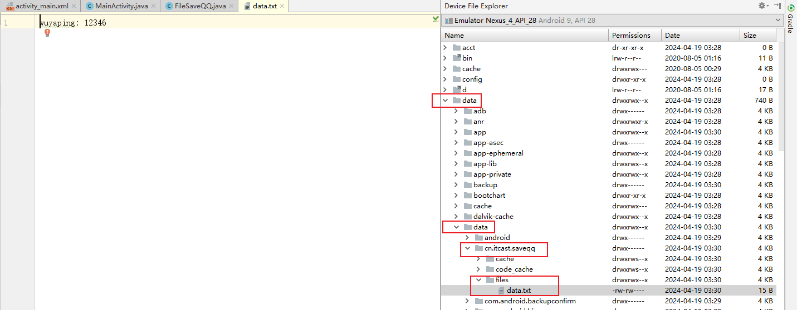
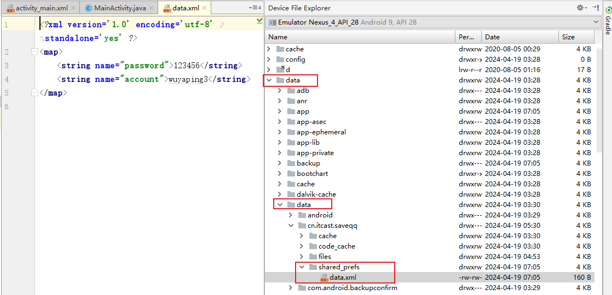
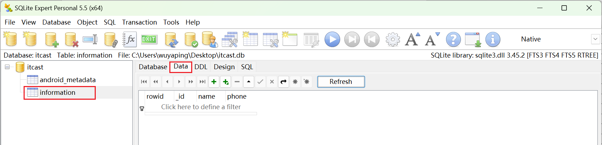
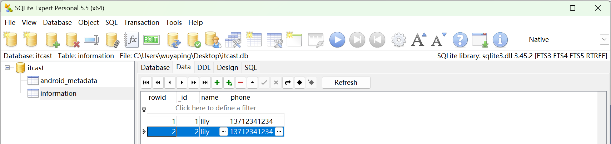

第5章 数据存储
第5章 数据存储¶
5.2 文件存储¶
Android中有两种文件存储方式：内部存储和外部存储。
- 内部存储
- 存储位置：数据以文件的形式存储到应用程序中。
- 存储路径：
data/data/<packagename>/files - 访问权限：应用程序私有，其他应用程序想要访问需要申请权限
- 删除文件：随应用程序卸载自动删除。
-
操作数据：通过openFileOutput()方法和openFileInput()方法获取FileOutputStream和FileInputStream操作对象
-
外部存储
-
存储位置：数据以文件的形式存储到外部设备上（例如SD卡、内置存储卡等）。
- 存储路径：
storage/emulated/0/，不同厂商的存储路径可能有有所不同 - 访问权限：可以被其他应用程序共享。
- 删除文件：可连接到计算机上进行浏览、修改和删除。
- 操作数据：直接使用FileOutputStream和FileInputStream操作对象
5.2.1 将数据存入文件中¶
- 内部存储
String fileName = "data.txt"; //文件名称
String content = "helloworld"; //保存数据
FileOutputStream fos = null;
try{
// 打开应用程序中对应的输出流，将数据存储到指定的文件中。
// 第一个参数：文件名，如果文件不存在，Android会自动创建它 第二个参数：文件的操作模式
fos = openFileOutput(fileName, MODE_PRIVATE);
fos.write(content.getBytes()); // 将数据写入文件中
}......
- 外部存储
String state = Environment.getExternalStorageState(); // 获取外部设备状态
if (state.equals(Environment.MEDIA_MOUNTED)) { // 判断外部设备状态是否可用
File SDPath = Environment.getExternalStorageDirectory(); // 获取SD卡目录
File file = new File(SDPath, "data.txt"); // 创建文件对象
String data = "HelloWorld";
FileOutputStream fos = null;
try{
fos = new FileOutputStream(file); // 创建文件输出流对象
fos.write(data.getBytes()); //将数据写入文件
}......
}
注意：使用外部存储需要申请权限，否则操作文件会失败，同时程序运行日志中会有 java.io.FileNotFoundException(Permission denied) 的警告信息。
5.2.2 从文件中读取数据¶
- 内部存储
String content = "";
FileInputStream fis = null;
try{
fis = openFileInput("data.txt"); // 打开应用程序对应的输入流，读取指定文件中的数据
byte[] buffer = new byte[fis.available()]; // 创建缓冲区并获取文件长度
fis.read(buffer); // 将文件内容读取到buffer缓冲区
content = new String(buffer); // 转换成字符串
}......
- 外部存储
String state = Environment.getExternalStorageState(); // 获取外部设备状态
if (state.equals(Environment.MEDIA_MOUNTED)) { // 判断外部设备状态是否可用
File SDPath = Environment.getExternalStorageDirectory(); // 获取SD卡目录
File file = new File(SDPath, "data.txt"); // 创建文件对象
FileInputStream fis = null;
BufferedReader br = null; // 可以接收任意长度的数据，并避免乱码的产生
try {
fis = new FileInputStream(file); // 创建文件输入流对象
br = new BufferedReader(new InputStreamReader(fis)); //创建字符输入缓冲流的对象。InputStreamReader将字节流转成字符流
String data = br.readLine(); // 读取数据
}......
}
参考资料：
- Java IO——字节流和字符流详解&区别对比_javaio中字符流和字节的区别-CSDN博客
- [java中String和byte[\]转换-CSDN博客](https://blog.csdn.net/jcs1992/article/details/103413122)
- Java IO流（超详细！）-CSDN博客
5.2.3 实战演练——保存QQ账号和密码¶
- 创建工具类FileSaveQQ，实现QQ账号的存储与读取功能。
（1）内部存储
public class FileSaveQQ {
private static String FILENAME = "data.txt";
public static boolean saveUserInfo(Context context, String account, String password){
FileOutputStream fos = null;
try{
fos = context.openFileOutput(FILENAME, Context.MODE_PRIVATE);
fos.write((account + ": " + password).getBytes());
return true;
}
catch (Exception e){
e.printStackTrace();
return false;
}
finally {
if (fos != null){
try {
fos.close();
} catch (IOException e) {
e.printStackTrace();
}
}
}
}
public static Map<String, String> getUserInfo(Context context){
FileInputStream fis = null;
try {
fis = context.openFileInput(FILENAME);
byte[] buffer = new byte[fis.available()];
fis.read(buffer);
String content = new String(buffer);
Map<String, String> userMap = new HashMap<String, String>();
String[] infos = content.split(": ");
userMap.put("account", infos[0]);
userMap.put("password", infos[1]);
return userMap;
} catch (Exception e) {
e.printStackTrace();
return null;
} finally {
if (fis != null){
try {
fis.close();
} catch (IOException e) {
e.printStackTrace();
}
}
}
}
}
（2）外部存储
public class OuterFileSaveQQ {
// 存储数据的文件名称
private static String FILENAME = "data.txt";
// 获取外部存储中的文件对象
private static File getStorageFile(){
String state = Environment.getExternalStorageState();
if (state.equals(Environment.MEDIA_MOUNTED)){
File SDPath = Environment.getExternalStorageDirectory();
Log.i("saveQQ", "SDPath: " + SDPath.getPath());
return new File(SDPath, FILENAME);
}
else {
return null;
}
}
public static boolean saveUserInfo(Context context, String account, String password){
File file = getStorageFile();
if (file == null){
return false;
}
FileOutputStream fos = null;
try {
fos = new FileOutputStream(file);
fos.write((account + ": " + password).getBytes());
return true;
} catch (Exception e) {
e.printStackTrace();
return false;
}
finally {
if(fos != null){
try {
fos.close();
} catch (IOException e) {
e.printStackTrace();
}
}
}
}
public static Map<String, String> getUserInfo(Context context){
FileInputStream fis = null;
File file = getStorageFile();
if (file == null){
return null;
}
try {
fis = new FileInputStream(file);
BufferedReader br = new BufferedReader(new InputStreamReader(fis));
String content = br.readLine();
Map<String, String> userInfo = new HashMap<String, String>();
String[] infos = content.split(": ");
userInfo.put("account", infos[0]);
userInfo.put("password", infos[1]);
return userInfo;
} catch (Exception e) {
e.printStackTrace();
return null;
}
finally {
if (fis != null){
try {
fis.close();
} catch (IOException e) {
e.printStackTrace();
}
}
}
}
}
- 在 MainActivity 中编写逻辑代码，实现QQ账号与密码的存储与读取功能。
（1）使用内部存储工具类
public class MainActivity extends AppCompatActivity implements View.OnClickListener {
private Button btn_login;
private EditText et_account;
private EditText et_password;
@Override
protected void onCreate(Bundle savedInstanceState) {
super.onCreate(savedInstanceState);
setContentView(R.layout.activity_main);
initView();
Map<String, String> userInfo = FileSaveQQ.getUserInfo(this);
if(userInfo != null){
et_account.setText(userInfo.get("account"));
et_password.setText(userInfo.get("password"));
}
}
private void initView(){
et_account = findViewById(R.id.et_account);
et_password = findViewById(R.id.et_password);
btn_login = findViewById(R.id.btn_login);
btn_login.setOnClickListener(this);
}
@Override
public void onClick(View v) {
switch (v.getId()) {
case R.id.btn_login:
String account = et_account.getText().toString().trim();
String password = et_password.getText().toString();
if (TextUtils.isEmpty(account)) {
Toast.makeText(this, "请输入账号", Toast.LENGTH_SHORT).show();
return;
}
if (TextUtils.isEmpty(password)) {
Toast.makeText(this, "请输入密码", Toast.LENGTH_SHORT).show();
return;
}
Toast.makeText(this, "登录成功", Toast.LENGTH_SHORT).show();
boolean isSaveSuccess = FileSaveQQ.saveUserInfo(this, account, password);
if (isSaveSuccess) {
Toast.makeText(this, "保存成功", Toast.LENGTH_SHORT).show();
}
else{
Toast.makeText(this, "保存失败", Toast.LENGTH_SHORT).show();
}
break;
}
}
}
（2）使用外部存储工具类
-
申请SD卡写权限
-
在AndroidManifest.xml的
标签中申请所需权限。 -
在MainActivity的onCreate()方法中申请权限。
-
-
修改MainActivity中使用的工具类
Map<String, String> userInfo = OuterFileSaveQQ.getUserInfo(this);
boolean isSaveSuccess = OuterFileSaveQQ.saveUserInfo(this, account, password);
- 运行程序。
输入账号（姓名拼音）和密码（学号），点击登录，出现“保存成功”的提示。
验证账号和密码是否成功保存到文件中。

5.3 SharedPreferences存储¶
文件存储位置：/data/data/<packagename>/shared_prefs/
5.3.1 将数据存入SharedPreferences¶
// 获取 SharedPreferences 实例对象。第一个参数：文件名，文件类型为xml文件；第二个参数：文件操作模式。
SharedPreferences sp = getSharedPreferences("data",MODE_PRIVATE);
// 获取编辑器
SharedPreferences.Editor editor = sp.edit();
// 使用putXXX()方法存入数据。Editor对象以键值对保存数据。
editor.putString("name", "张三");
editor.putInt("age", 8);
// 提交数据
editor.commit();
5.3.2 读取与删除SharedPreferences中的数据¶
- 读取数据
// 获取 SharedPreferences 实例对象。
SharedPreferences sp = getSharedPreferences("data",MODE_PRIVATE);
// 使用getXXX()方法根据键值获取数据。第二个参数为缺省值。
String data = sp.getString("name","");
- 删除数据
5.3.3 实战演练——保存QQ账号和密码¶
- 创建工具类SPSaveQQ。
public class SPSaveQQ {
private static final String FILENAME = "data";
private static final String ACCOUNT = "account";
private static final String PASSWORD = "password";
public static boolean saveUserInfo(Context context, String account, String password){
SharedPreferences sp = context.getSharedPreferences(FILENAME, Context.MODE_PRIVATE);
SharedPreferences.Editor editor = sp.edit();
editor.putString(ACCOUNT, account);
editor.putString(PASSWORD, password);
editor.commit();
return true;
}
public static Map<String, String> getUserInfo(Context context){
Map<String, String> userInfo = new HashMap<String, String>();
SharedPreferences sp = context.getSharedPreferences(FILENAME, Context.MODE_PRIVATE);
userInfo.put(ACCOUNT, sp.getString(ACCOUNT, null));
userInfo.put(PASSWORD, sp.getString(PASSWORD, null));
return userInfo;
}
}
- 编写界面交互代码
修改MainActivity中使用的工具类。
Map<String, String> userInfo = SPSaveQQ.getUserInfo(this);
boolean isSaveSuccess = SPSaveQQ.saveUserInfo(this, account, password);
- 运行程序。
输入账号和密码登录成功后，验证数据是否保存到文件中。

5.4 SQLite存储¶
下载并安装 SQLite Expert Personal 可视化工具。下载地址：https://www.sqliteexpert.com/download.html。
以“实战演练——绿豆通讯录”为例。
参考资料：
- Android ：这是一份详细 & 全面的 SQLlite数据库 使用手册 - 掘金 (juejin.cn)
- [SQLite Android SQLite：Update语句|极客笔记 (deepinout.com)](https://deepinout.com/sqlite/sqlite-questions/173_sqlite_android_sqlite_update_statement.html#:~:text=更新数据库的返回值 当我们调用 update 方法时，它会返回一个整数值，表示更新的行数。 我们可以使用这个返回值来检查是否成功更新了数据。 public int updateData(int,db %3D this.getWritableDatabase()%3B ContentValues values %3D new ContentValues()%3B)
5.4.1 创建 SQLite 数据库¶
- 创建数据库子类（继承 SQLiteOpenHelper 类）
/**
* 创建数据库子类，继承自SQLiteOpenHelper类
* 需 复写 onCreate（）、onUpgrade（）
*/
public class MyHelper extends SQLiteOpenHelper {
/**
* 构造函数
* 在SQLiteOpenHelper的子类中，必须有该构造函数
*/
public MyHelper(Context context) {
// 参数说明
// context：上下文对象
// name：数据库名称
// param：一个可选的游标工厂（通常是 Null）
// version：当前数据库的版本，值必须是整数并且是递增的状态
// 必须通过super调用父类的构造函数
super(context, "itcast.db", null, 1);
}
/**
* 复写onCreate（）
* 调用时刻：当数据库第1次创建时调用
* 作用：创建数据库 表 & 初始化数据
* SQLite数据库创建支持的数据类型： 整型数据、字符串类型、日期类型、二进制
*/
public void onCreate(SQLiteDatabase db) {
// 创建数据库1张表
// 通过execSQL（）执行SQL语句（此处创建了1个名为person的表）
db.execSQL("CREATE TABLE information(_id INTEGER PRIMARY KEY AUTOINCREMENT, " +
"name VARCHAR(20), phone VARCHAR(20))");
// 注：数据库实际上是没被创建 / 打开的（因该方法还没调用）
// 直到getWritableDatabase() / getReadableDatabase() 第一次被调用时才会进行创建和打开
}
public void onUpgrade(SQLiteDatabase db, int oldVersion, int newVersion) {
}
}
- 创建数据库：getWritableDatabase（）、getReadableDatabase（）
// 步骤1：创建DatabaseHelper对象
// 注：此时还未创建数据库
MyHelper myHelper = new MyHelper(this);
// 步骤2：真正创建 / 打开数据库
SQLiteDatabase db = myHelper.getWritableDatabase(); // 创建 or 打开 可读/写的数据库
SQLiteDatabase db = myHelper.getReadableDatabase(); // 创建 or 打开 可读的数据库
注：当需操作数据库时，都必须先创建数据库对象 & 创建 / 打开数据库。
- 对于操作 = “增、删、改（更新）”，需获得 可"读 / 写"的权限：getWritableDatabase()
-
对于操作 = “查询”，需获得 可"读 "的权限getReadableDatabase()
-
在 SQLite Expert Personal 可视化工具中查看创建好的数据库。
当前应用的数据库文件目录：data/data/"项目报名全路径"/databases。

5.4.2 SQLite 数据库的基本操作¶
5.4.2.1 新增数据¶
/**
* 1. 创建 & 打开数据库
*/
// 创建 or 打开 可读/写的数据库
db = myHelper.getWritableDatabase();
/**
* 2. 插入数据 = insert()
*/
// a. 创建ContentValues对象
ContentValues values = new ContentValues();
// b. 向该对象中插入键值对
values.put("name", name);
values.put("phone", phone);
// 其中，key = 列名，value = 插入的值
// 注：ContentValues内部实现 = HashMap，区别在于：ContenValues Key只能是String类型，Value可存储基本类型数据 & String类型
// c. 插入数据到数据库当中：insert()
long id = db.insert("information",null, values);
// 参数1：要操作的表名称
// 参数2：SQl不允许一个空列，若ContentValues是空，那么这一列被明确的指明为NULL值
// 参数3：ContentValues对象
// 注：也可采用SQL语句插入，但该方法没有返回值
// String insertSql = "insert into information (name, phone) values (?, ?)";
// db.execSQL(insertSql, new Object[]{name, phone});
// d. 检查sql执行结果
if (id == -1) {
Toast.makeText(this, "添加失败！", Toast.LENGTH_SHORT).show();
}
else {
Toast.makeText(this, "信息已添加！", Toast.LENGTH_SHORT).show();
}
db.close();

5.4.2.2 查询数据¶
case R.id.btn_query: //查询数据
db = myHelper.getReadableDatabase();
Cursor cursor = db.query("information", null, "name=?",
new String[]{name},null, null, null);
if (cursor.getCount() == 0){
mTvShow.setText("");
Toast.makeText(this, "没有查询到姓名是【"+name+"】的数据！",
Toast.LENGTH_SHORT).show();
} else {
StringBuilder info = new StringBuilder();
while (cursor.moveToNext()){
info.append("ID: " + cursor.getString(0) +
"; Name: " + cursor.getString(1) +
"; Phone: " + cursor.getString(2) + "\n");
}
mTvShow.setText(info);
}
cursor.close();
db.close();
break;
相关资料：
5.4.2.3 修改数据¶
case R.id.btn_update: //修改数据
db = myHelper.getWritableDatabase();
values = new ContentValues();
values.put("phone", phone);
int number = db.update("information", values, "name =?",
new String[]{name});
if (number > 0) {
Toast.makeText(this, "成功更新"+number+"条数据！",
Toast.LENGTH_SHORT).show();
} else {
Toast.makeText(this, "更新数据失败！",
Toast.LENGTH_SHORT).show();
}
db.close();
break;
5.4.2.4 删除数据¶
case R.id.btn_delete: //删除数据
db = myHelper.getWritableDatabase();
number = db.delete("information", "name=?",
new String[]{name});
if (number > 0) {
Toast.makeText(this, "成功删除"+number+"条数据！",
Toast.LENGTH_SHORT).show();
} else {
Toast.makeText(this, "删除失败！",
Toast.LENGTH_SHORT).show();
}
db.close();
break;